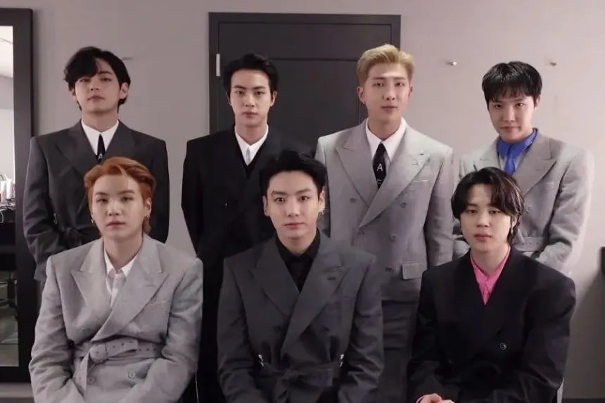

MTV Video Music Awards — Best K-pop
BTS nhận giải Best K-pop tại MTV VMA.
MAMA Awards — Album of the Year
Giải thưởng Album của năm tại MAMA.
Grammy Awards — Best Pop Duo/Group (Nomination)
BTS được đề cử tại Grammy — giải âm nhạc danh giá nhất thế giới.